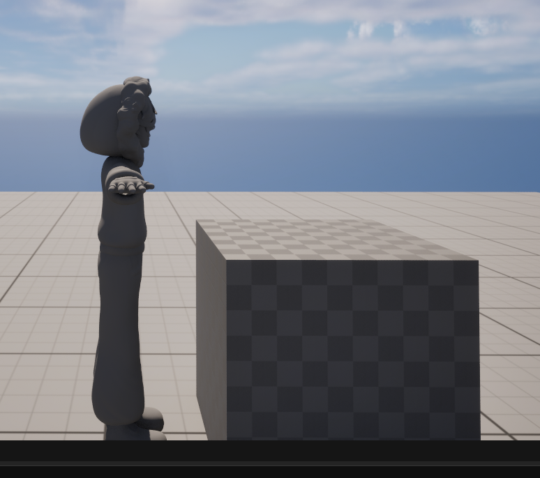
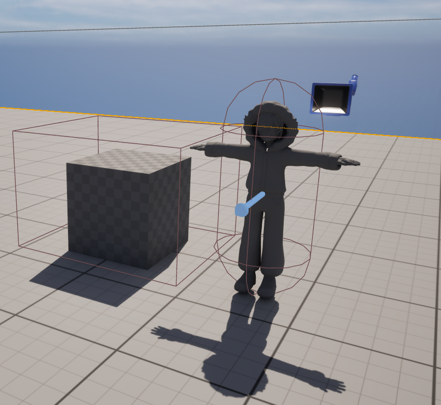

Project Description
Prototype of the first game pitch for UQAC's Video Game Production course, created in collaboration with students from NAD-UQAC and DIM. The assignment was to create a game centered on a hero's journey with a companion.
Borealis is a puzzle-platformer where an archaeologist explores ruins in Russia accompanied by a Golem. Together, they must cooperate to uncover what happened in these mysterious ruins...
My Role & Contributions
As a Gameplay Programmer on this project, I focused on implementing specific puzzle mechanics, such as the movable cubes and their interaction with switches. Beyond these core features, I played a significant role in debugging the wider game, helping to fix issues with the companion's navigation (A to B movement), object destruction, and gamepad inputs. It was a highly collaborative environment where every developer touched different parts of the project.
- Implemented core puzzle mechanics, specifically cube manipulation and switch interactions.
- Contributed to general debugging and polish across various features.
- Assisted in debugging companion AI behaviors (movement, object destruction) and controller input support.
- Collaborated in a cross-functional environment where developers shared responsibilities across the codebase.
Challenges & Learnings
Teamwork & Coordination : The main challenge of this project was undoubtedly teamwork. It was my first experience with such a large team and my first collaboration with NAD-UQAC. Communication was difficult, and coordinating tasks between the different disciplines was complicated. However, we managed to deliver a solid prototype. I learned that while working in a team seems simple in theory, coordinating tasks and maintaining constant communication is essential to avoid conflicts.
Debugging in Unreal Engine : The other major challenge was technical debugging in Unreal Engine. I spent entire evenings tracking down issues, fixing them, playtesting, and repeating the cycle to ensure a functional game. This was my first experience with such intense debugging. In the end, it was a valuable learning experience; I now know how to recognize and avoid recurrent bugs, which will be a great asset for my future projects.
Gallery

